Appendix F — 2D Poisson I: Heat Flow in a Battery Cell
This page is the two-dimensional sequel to 1D Poisson I: Heat Conduction Through a Wall. The wall was a problem in one coordinate: temperature changed only through its thickness. Here heat flows through the cross-section of a lithium-ion battery cell, and temperature changes in two directions at once. The physics is the same two ideas — energy is conserved, and heat flows from hot to cold. What changes is the calculus. Each derivative in the 1D strong form becomes a gradient, a divergence, or a Laplacian, and the wall’s two boundary points become a boundary curve. The goal of this page is to make each of those objects something you can see.
Hughes states the model problem for any number of space dimensions \(n_{sd}\) (Chapter 2), in index notation:
\[ (\mathrm{S}) \qquad \begin{aligned} &\text{Given } f : \Omega \to \RR,\; g : \Gamma_g \to \RR, \text{ and } h : \Gamma_h \to \RR, \\ &\text{find } u : \bar\Omega \to \RR \text{ such that} \\[2pt] &\qquad q_{i,i} = f \quad \text{in } \Omega \\ &\qquad u = g \quad \text{on } \Gamma_g \\ &\qquad -q_i\,n_i = h \quad \text{on } \Gamma_h \\[2pt] &\text{where } q_i = -\kappa_{ij}\,u_{,j} \end{aligned} \]
Substituting the last relation into the others gives the form used in Class 4, shown here in both notations:
\[ \begin{aligned} -\nabla\cdot\left(\underline{\underline{\kappa}}\,\nabla u\right) = f \quad&\Longleftrightarrow\quad -\left(\kappa_{ij}\,u_{,j}\right)_{,i} = f && \text{in } \Omega \\ u = g \quad& && \text{on } \Gamma_g \\ \left(\underline{\underline{\kappa}}\,\nabla u\right)\cdot\underline{n} = h \quad&\Longleftrightarrow\quad \kappa_{ij}\,u_{,j}\,n_i = h && \text{on } \Gamma_h \end{aligned} \]
For most of this page the material conducts equally well in every direction — it is isotropic — so \(\kappa_{ij} = \kappa\,\delta_{ij}\) and the differential equation becomes
\[ \begin{aligned} -\nabla\cdot\left(\kappa\nabla u\right) = f \quad&\Longleftrightarrow\quad -\left(\kappa\,u_{,i}\right)_{,i} = f \\ \xrightarrow{\;\kappa \text{ constant}\;}\quad -\kappa\,\Delta u = f \quad&\Longleftrightarrow\quad -\kappa\,u_{,ii} = f \end{aligned} \]
In one dimension the index has a single value, \(i = 1\), and every sum above has one term: \(q_{i,i}\) is \(q_{,x}\), and \(\kappa_{ij}u_{,j}n_i\) is \(\kappa u_{,x}\,n\). That is the wall. On this page \(i\) runs over 1 and 2, \(u\) is a temperature, \(q_i\) is the heat flux vector, and everything is in SI units.
F.1 The physical problem
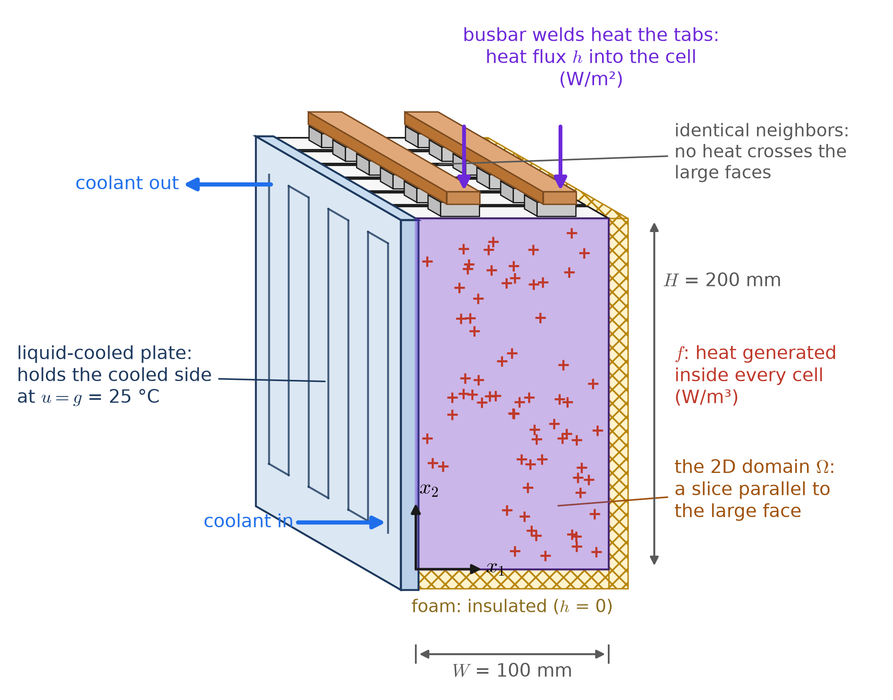
A battery module in an electric vehicle packs prismatic lithium-ion cells side by side, large face to large face. Here each cell is 100 mm wide, 200 mm tall, and 27 mm thick. A liquid-cooled aluminum plate is bonded along one narrow side of the whole row, copper busbars are welded across the terminal tabs on top, and foam fills the rest of the enclosure. During a fast charge, the current flowing through the electrodes and electrolyte generates heat throughout every cell, and the resistance of the tab welds adds heat that flows down into the cells through their tabs.
Why two dimensions. Every cell in the row is identical and heated identically, so by symmetry no heat crosses the large face between one cell and the next. Nothing then varies through the thickness, and the temperature depends only on the position \((x_1, x_2)\) in the plane of the large face. This is the argument that made the wall one-dimensional, applied to one direction instead of two. There, nothing varied along the wall or up it. Here, nothing varies along the row. So take a slice parallel to the large face and follow the temperature across it. Every quantity on this page is per meter of depth in the stacking direction, which is why the total heat made comes out in W/m. To get watts for one 27 mm cell, multiply by \(T = 0.027\) m.
| What happens physically | Where | Becomes |
|---|---|---|
| Current through the electrodes generates heat | throughout \(\Omega\) | the forcing \(f\) |
| The cooling plate holds the cell’s side at the coolant temperature | the edge \(x_1 = 0\) | a Dirichlet condition \(u = g\) |
| Heat from the tab welds flows in through the tabs | two stretches of the top edge | a Neumann condition, \(h > 0\) |
| Foam insulates the far side, the bottom, and the top between the tabs | the rest of the boundary | a Neumann condition, \(h = 0\) |
Two things are new compared with the wall. Each “face” is now an edge with a length, and the data can change from point to point along it: \(h\) is 5000 W/m² on the tabs and zero on the rest of the top edge. And the insulated edges, which the wall example did not have, still carry a boundary condition. “Insulated” means \(h = 0\). It does not mean “no condition”.
F.2 The two-dimensional domain
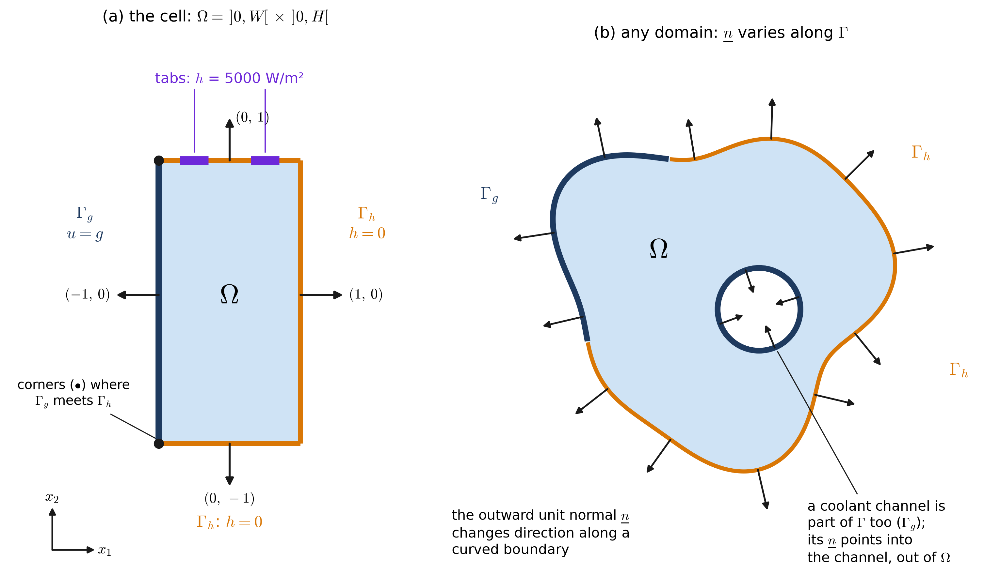
- \(\Omega = \,]0, W[\, \times \,]0, H[\) is the open rectangle: the cross-section without its edges. A point in it is \(\underline{x} = (x_1, x_2)\), or \(x_i\) in index notation. Many books write \(x\) and \(y\) instead of \(x_1\) and \(x_2\).
- \(\bar\Omega = [0, W] \times [0, H]\) is its closure, edges included. The solution \(u\) is defined on \(\bar\Omega\) because we need its values on the edges.
- \(\Gamma\) is the boundary. In 1D it was two points. Now it is a closed curve — here the four edges, \(2(W + H) = 0.6\) m long in total. Integrals over \(\Omega\) are area integrals, \(d\Omega = dx_1\,dx_2\) (m²). Integrals over \(\Gamma\) are line integrals, with \(d\Gamma\) (m) measured along the curve.
- The outward unit normal \(\underline{n} = (n_1, n_2)\) has length one, \(n_i n_i = 1\), and points out of \(\Omega\). In 1D it was a sign, \(\pm 1\). Now it is a vector: constant along each straight edge, but turning from point to point along a curved boundary. At a corner it is not defined. Corners have zero length, so the boundary integrals never notice them.
- A boundary can come in several pieces. The wall of a channel through the body is part of \(\Gamma\), and its outward normal points into the channel — out of \(\Omega\).
- \(\Gamma_g\) (blue) and \(\Gamma_h\) (amber) split \(\Gamma\) so that every point gets exactly one boundary condition. See the partition below.
F.3 The quantities and their units
| Symbol | Meaning | SI units | This example |
|---|---|---|---|
| \(x_i = (x_1, x_2)\) | position in the cross-section | m | \(0 \le x_1 \le W\), \(0 \le x_2 \le H\) |
| \(W,\ H\) | cell width, cell height | m | 0.10 m, 0.20 m |
| \(T\) | cell thickness, out of the plane | m | 0.027 m |
| \(u(\underline{x})\) | temperature | °C (or K) | unknown |
| \(u_{,i} = \nabla u\) | temperature gradient | °C/m | unknown |
| \(q_i = \underline{q}\) | heat flux vector | W/m² | unknown |
| \(\kappa\) | thermal conductivity (in the plane) | W/(m·K) | 25 W/(m·K) |
| \(\kappa_{ij} = \underline{\underline{\kappa}}\) | conductivity tensor | W/(m·K) | \(\kappa\,\delta_{ij}\) |
| \(f(\underline{x})\) | heat generated per unit volume | W/m³ | 25,000 W/m³ |
| \(g(\underline{x})\) | prescribed temperature on \(\Gamma_g\) | °C | 25 °C |
| \(h(\underline{x})\) | prescribed heat flux into the body on \(\Gamma_h\) | W/m² | 5000 W/m² on the tabs, 0 elsewhere |
| \(n_i = \underline{n}\) | outward unit normal | — | e.g. \((-1, 0)\) on \(\Gamma_g\) |
| \(d\Omega\), \(d\Gamma\) | area element, length element | m², m |
A cell is a stack of thin copper and aluminum foils, porous electrodes, and separator. Heat flows easily along those layers, which here lie in the plane of the slice, and poorly across them, at about 1 W/(m·K). We come back to this when we meet \(\kappa_{ij}\). As before, temperature differences are the same in °C and K.
F.4 Index notation in two dimensions
The strong form will be written two ways from here on: in vector notation (\(\nabla u\), \(\nabla\cdot\underline{q}\), \(\underline{q}\cdot\underline{n}\)) and in index notation (\(u_{,i}\), \(q_{i,i}\), \(q_i n_i\)), as introduced in Class 3. The rules you need:
- An index runs over the space dimensions: \(i = 1, 2\) here (\(i = 1, 2, 3\) in 3D, and only \(i = 1\) in 1D).
- A comma means a partial derivative with respect to the coordinate named by the index after it: \(u_{,i} = \partial u / \partial x_i\), so \(u_{,1} = \partial u/\partial x_1\) and \(u_{,12} = \partial^2 u / \partial x_1 \partial x_2\). Indices before the comma label components: \(q_{2,1} = \partial q_2 / \partial x_1\).
- A free index appears once in a term, and the expression stands for one equation for each of its values: \(q_i = -\kappa u_{,i}\) is two equations, \(q_1 = -\kappa u_{,1}\) and \(q_2 = -\kappa u_{,2}\).
- A repeated (dummy) index is summed over all its values: \(q_{i,i} = q_{1,1} + q_{2,2}\). Its letter does not matter: \(q_{i,i} = q_{k,k}\).
- No index may appear more than twice in one term, and every term of an equation must carry the same free indices. \(q_i = f\) is meaningless (a vector cannot equal a scalar), and so is \(u_{,i} n_i n_i\).
- Count the free indices to know what you are holding: none is a scalar (\(u\), \(f\), \(q_{i,i}\), \(u_{,i}n_i\)), one is a vector (\(x_i\), \(u_{,i}\), \(q_i\), \(n_i\)), two is a matrix (\(\kappa_{ij}\), \(u_{,ij}\)).
- The Kronecker delta \(\delta_{ij}\) is 1 when \(i = j\) and 0 otherwise, the identity matrix. Summing against it renames an index: \(\delta_{ij}\,u_{,j} = u_{,i}\).
Every object in the strong form, in every notation:
| 1D (the wall) | 2D, vector | 2D, index | 2D, written out | |
|---|---|---|---|---|
| position | \(x\) | \(\underline{x}\) | \(x_i\) | \((x_1,\ x_2)\) |
| temperature gradient | \(u_{,x}\) | \(\nabla u\) | \(u_{,i}\) | \(\left(\dfrac{\partial u}{\partial x_1},\ \dfrac{\partial u}{\partial x_2}\right)\) |
| heat flux (Fourier) | \(q = -\kappa u_{,x}\) | \(\underline{q} = -\kappa\nabla u\) | \(q_i = -\kappa u_{,i}\) | \(\left(-\kappa\dfrac{\partial u}{\partial x_1},\ -\kappa\dfrac{\partial u}{\partial x_2}\right)\) |
| net outflow | \(q_{,x}\) | \(\nabla\cdot\underline{q}\) | \(q_{i,i}\) | \(\dfrac{\partial q_1}{\partial x_1} + \dfrac{\partial q_2}{\partial x_2}\) |
| diffusion term | \(\left(\kappa u_{,x}\right)_{,x}\) | \(\nabla\cdot\left(\kappa\nabla u\right)\) | \(\left(\kappa u_{,i}\right)_{,i}\) | \(\dfrac{\partial}{\partial x_1}\!\left(\kappa\dfrac{\partial u}{\partial x_1}\right) + \dfrac{\partial}{\partial x_2}\!\left(\kappa\dfrac{\partial u}{\partial x_2}\right)\) |
| Laplacian | \(u_{,xx}\) | \(\Delta u = \nabla\cdot\nabla u = \nabla^2 u\) | \(u_{,ii}\) | \(\dfrac{\partial^2 u}{\partial x_1^2} + \dfrac{\partial^2 u}{\partial x_2^2}\) |
| outward normal | \(n = \pm 1\) | \(\underline{n}\) | \(n_i\) | \((n_1,\ n_2)\) |
| flux leaving through \(\Gamma\) | \(q\,n\) | \(\underline{q}\cdot\underline{n}\) | \(q_i n_i\) | \(q_1 n_1 + q_2 n_2\) |
| normal derivative | \(u_{,x}\,n\) | \(\nabla u\cdot\underline{n} = \dfrac{\partial u}{\partial n}\) | \(u_{,i}n_i\) | \(\dfrac{\partial u}{\partial x_1}n_1 + \dfrac{\partial u}{\partial x_2}n_2\) |
| conductivity | \(\kappa\) | \(\underline{\underline{\kappa}}\) | \(\kappa_{ij}\) | \(\begin{bmatrix} \kappa_{11} & \kappa_{12} \\ \kappa_{21} & \kappa_{22}\end{bmatrix}\) |
Read across a row to see what a 1D symbol becomes in 2D. Every line of the 2D strong form is assembled from these rows, and each gets its own section below.
NoteIndex Notation Review: unpack these in 2D
- \(\kappa_{ij}\,u_{,j}\,n_i\) — two dummy indices, so a double sum with four terms: \(\kappa_{11}u_{,1}n_1 + \kappa_{12}u_{,2}n_1 + \kappa_{21}u_{,1}n_2 + \kappa_{22}u_{,2}n_2\). It is a scalar: no free index is left.
- \(\delta_{ii} = \delta_{11} + \delta_{22} = 2\), the number of space dimensions.
- \(u_{,i}\,u_{,i} = \left(u_{,1}\right)^2 + \left(u_{,2}\right)^2 = |\nabla u|^2\).
- With \(\kappa_{ij} = \kappa\,\delta_{ij}\): \(\kappa_{ij}u_{,j} = \kappa\,\delta_{ij}u_{,j} = \kappa\,u_{,i}\). The isotropic flux is the general one with the identity matrix.
- \(\left(\kappa\,u_{,i}\right)_{,i} = \kappa_{,i}\,u_{,i} + \kappa\,u_{,ii}\) by the product rule. The first term vanishes when \(\kappa\) does not vary in space, leaving \(\kappa\) times the Laplacian.
- \(u_{,12} = u_{,21}\) for a smooth \(u\) (mixed partial derivatives commute), so the matrix \(u_{,ij}\) is symmetric.
F.5 The temperature gradient: \(\nabla u = u_{,i}\)
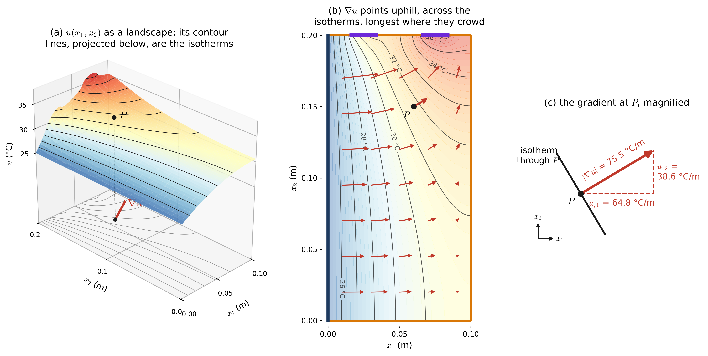
In 1D the slope \(u_{,x}\) was a single number. Its sign said which way was uphill (toward \(+x\) or \(-x\)) and its size said how steep. In 2D, uphill can be any direction in the plane, so the slope becomes a vector:
\[ \nabla u \;=\; u_{,i} \;=\; \begin{bmatrix} u_{,1} \\ u_{,2} \end{bmatrix} \;=\; \begin{bmatrix} \partial u / \partial x_1 \\ \partial u / \partial x_2 \end{bmatrix} \qquad [{}^\circ\text{C/m}] \]
Its components are the ordinary slopes along the two axes. To get the slope in any other direction, take the component of \(\nabla u\) along it. Moving in the direction of a unit vector \(\underline{e}\), the temperature changes at the rate
\[ \frac{du}{ds} \;=\; \nabla u\cdot\underline{e} \;=\; u_{,i}\,e_i \;=\; u_{,1}e_1 + u_{,2}e_2 \;=\; |\nabla u|\cos\theta \]
where \(\theta\) is the angle between \(\underline{e}\) and \(\nabla u\). Three facts follow, and all three are visible in Figure F.3:
- The rate is largest, \(|\nabla u|\), when \(\underline{e}\) points along \(\nabla u\). The gradient points in the direction of steepest ascent, and its length is that steepest slope.
- The rate is zero when \(\underline{e}\) is perpendicular to \(\nabla u\). Moving that way, \(u\) does not change — that is the direction of the isotherm, the curve of constant temperature, through the point. So \(\nabla u\) is perpendicular to the isotherms.
- Where the isotherms crowd together, the temperature changes a lot over a short distance: \(|\nabla u|\) is large.
At the point \(P = (0.06,\ 0.15)\) m, \(\nabla u = (64.8,\ 38.6)\) °C/m. Walking in the \(+x_1\) direction, the temperature rises 0.65 °C per centimeter; walking in \(+x_2\), it rises 0.39 °C per centimeter. The steepest rise, 0.75 °C per centimeter, is in the direction 31° above the \(x_1\)-axis, and along the isotherm through \(P\) it does not rise at all.
F.6 Fourier’s law: heat flows straight downhill
The material relation is the same as in 1D, now applied to each component:
\[ \underline{q} = -\kappa\,\nabla u \quad\Longleftrightarrow\quad q_i = -\kappa\,u_{,i} \quad\Longleftrightarrow\quad \begin{cases} q_1 = -\kappa\,u_{,1} \\ q_2 = -\kappa\,u_{,2} \end{cases} \]
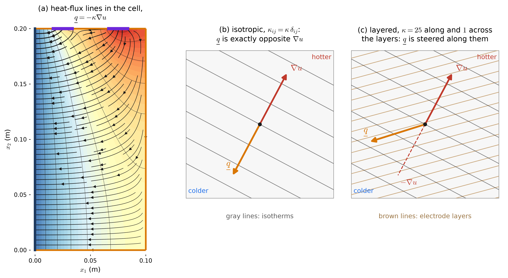
- The minus sign does what it did in 1D, but now it reverses a direction: \(\underline{q}\) points exactly opposite \(\nabla u\) — straight downhill, from hot to cold, crossing the isotherms at right angles.
- Its size is \(|\underline{q}| = \kappa\,|\nabla u|\), in W/m². A poorer conductor needs a steeper gradient to carry the same flux.
- For a unit vector \(\underline{m}\), the product \(\underline{q}\cdot\underline{m} = q_i m_i\) is the heat flux across a line whose unit normal is \(\underline{m}\). It is largest across the isotherm and zero across a heat-flux line. Taking \(\underline{m} = \underline{n}\) on the boundary gives the heat leaving \(\Omega\), which is exactly what the Neumann condition will fix.
At \(P\): \(\underline{q} = -25\,(64.8,\ 38.6) = (-1620,\ -966)\) W/m², with \(|\underline{q}| = 1886\) W/m². Heat at \(P\) is moving down and to the left — toward the cooling plate.
F.6.1 When the material has a grain: \(q_i = -\kappa_{ij}\,u_{,j}\)
Isotropy is an assumption about the material, and a battery cell is not isotropic. It is a stack of layers, and it conducts about 25 times better along them than across them. Our slice happens to lie parallel to the layers, so within the slice the cell is isotropic. Had we sliced across the thickness, the layers would show, and Fourier’s law would need a matrix:
\[ \underline{q} = -\underline{\underline{\kappa}}\,\nabla u \quad\Longleftrightarrow\quad q_i = -\kappa_{ij}\,u_{,j} \quad\Longleftrightarrow\quad \begin{bmatrix} q_1 \\ q_2 \end{bmatrix} = -\begin{bmatrix} \kappa_{11} & \kappa_{12} \\ \kappa_{21} & \kappa_{22} \end{bmatrix} \begin{bmatrix} u_{,1} \\ u_{,2} \end{bmatrix} \]
- Now \(\underline{q}\) is generally not parallel to \(-\nabla u\). Heat is steered toward the direction that conducts best (Figure F.4 c).
- \(\kappa_{ij}\) is symmetric, \(\kappa_{12} = \kappa_{21}\), and positive definite: \(\kappa_{ij}v_iv_j > 0\) for every nonzero vector \(v_i\). The second property guarantees \(\underline{q}\cdot\nabla u = -\kappa_{ij}u_{,i}u_{,j} < 0\). Heat can be steered sideways, but it never flows uphill.
- The isotropic case is \(\kappa_{ij} = \kappa\,\delta_{ij}\), and then \(\kappa_{ij}u_{,j} = \kappa\,u_{,i}\). The rest of this page uses it, while Class 4 and Hughes keep the general \(\kappa_{ij}\). Every statement still works for the anisotropic case if \(\kappa\nabla u\) is replaced by \(\underline{\underline{\kappa}}\nabla u\).
F.7 Where the differential equation comes from
F.7.1 Conservation of energy on a small rectangle
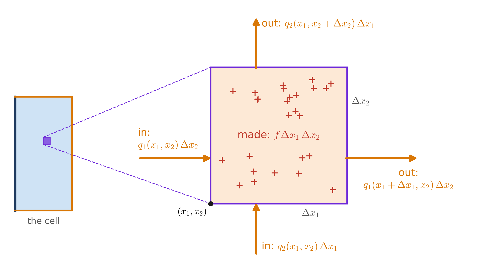
Cut a small rectangle out of the slice (Figure F.5). At steady state its temperature is not changing, so every watt that enters or is made inside must leave. The fluxes are counted positive in the \(+x_1\) and \(+x_2\) directions, exactly as \(q\) was counted positive toward \(+x\) in the wall:
\[ \begin{aligned} &\underbrace{q_1(x_1, x_2)\,\Delta x_2 - q_1(x_1 + \Delta x_1, x_2)\,\Delta x_2} _{\text{net in, left and right}} \\ &\quad+\; \underbrace{q_2(x_1, x_2)\,\Delta x_1 - q_2(x_1, x_2 + \Delta x_2)\,\Delta x_1} _{\text{net in, bottom and top}} \\ &\quad+\; \underbrace{f\,\Delta x_1\,\Delta x_2}_{\text{made}} \;=\; 0 \end{aligned} \]
Divide by \(\Delta x_1\,\Delta x_2\) and let both shrink to zero. Each difference quotient becomes a partial derivative:
\[ -\frac{\partial q_1}{\partial x_1} - \frac{\partial q_2}{\partial x_2} + f = 0 \quad\Longleftrightarrow\quad -\nabla\cdot\underline{q} + f = 0 \quad\Longleftrightarrow\quad -q_{i,i} + f = 0 \]
The combination \(q_{1,1} + q_{2,2}\) is the divergence of \(\underline{q}\):
\[ \nabla\cdot\underline{q} \;=\; q_{i,i} \;=\; \frac{\partial q_1}{\partial x_1} + \frac{\partial q_2}{\partial x_2} \qquad [\text{W/m}^3] \]
Each term of the balance is in watts per meter of depth: W/m² × m for the fluxes, and W/m³ × m² for the generation. Read the result as “at every point, the net rate at which heat flows away equals the rate at which it is made”: \(\nabla\cdot\underline{q} = f\), Hughes’ \(q_{i,i} = f\). The 1D balance \(q_{,x} = f\) is the same statement with one pair of faces instead of two.
F.7.2 The divergence theorem: the same balance for any region
Add up this balance over all the small rectangles that make up a region \(\omega\). On every internal side, what leaves one rectangle enters its neighbor, so those terms cancel in pairs. Only the flux through the outer boundary \(\partial\omega\) survives:
\[ \int_\omega \nabla\cdot\underline{q}\;d\Omega = \int_{\partial\omega} \underline{q}\cdot\underline{n}\;d\Gamma \quad\Longleftrightarrow\quad \int_\omega q_{i,i}\;d\Omega = \int_{\partial\omega} q_i\,n_i\;d\Gamma \]
This is the divergence theorem. Combined with \(\nabla\cdot\underline{q} = f\), it says that the heat leaving any region through its boundary equals the heat made inside it. The differential equation is the pointwise version of that statement. In 1D the region is an interval \([a, b]\), its boundary is the two end points, and the theorem is the fundamental theorem of calculus, with \(n(a) = -1\) and \(n(b) = +1\) doing the bookkeeping:
\[ \int_a^b q_{,x}\;dx \;=\; q(b) - q(a) \;=\; q(b)\,n(b) + q(a)\,n(a) \]
The divergence theorem is also what turns the strong form into the weak form: it is how integration by parts works in more than one dimension (Class 4).
F.8 The Laplacian: divergence of the gradient
Substituting Fourier’s law into the balance gives the differential equation of the strong form:
\[ \begin{aligned} -\nabla\cdot\left(\kappa\nabla u\right) = f \quad&\Longleftrightarrow\quad -\left(\kappa\,u_{,i}\right)_{,i} = f \\ \xrightarrow{\;\kappa\text{ constant}\;}\quad -\kappa\,\Delta u = f \quad&\Longleftrightarrow\quad -\kappa\,u_{,ii} = f \\ &\Longleftrightarrow\quad -\kappa\left(\frac{\partial^2 u}{\partial x_1^2} + \frac{\partial^2 u}{\partial x_2^2}\right) = f \\ \xrightarrow{\;\kappa = 1\;}\quad u_{,ii} + f = 0 \quad&\phantom{\Longleftrightarrow}\quad \text{(Hughes)} \end{aligned} \]
The operator \(\Delta u = \nabla\cdot\nabla u = u_{,ii}\) is the Laplacian, also written \(\nabla^2 u\). The notation \(\nabla\cdot\nabla u\) says what it does: take the gradient (a vector), then its divergence (back to a scalar). In 1D it is simply \(u_{,xx}\).
F.8.1 What the Laplacian says about the shape of \(u\)
In 1D, \(u_{,xx} = -f/\kappa\) fixed the curvature of the temperature profile at every point. In 2D the equation fixes only the sum of the two curvatures:
\[ u_{,11} + u_{,22} = -\frac{f}{\kappa} \]
The temperature may bend down sharply in one direction and up in the other, as long as the sum comes out right. Figure F.6 shows the three basic shapes and, below each, the heat-flux field that goes with it.
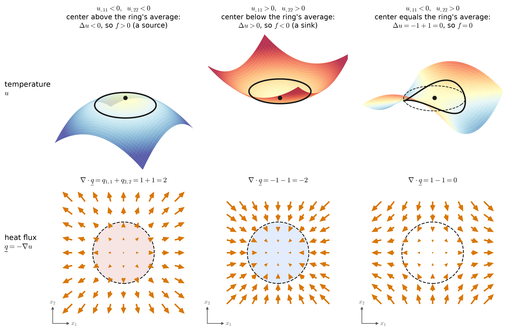
- Peak (\(f > 0\)). Both curvatures are negative. Heat flows away from the top in every direction, so more leaves any small circle than enters it: \(\nabla\cdot\underline{q} > 0\), a source.
- Valley (\(f < 0\)). Both curvatures are positive. Heat flows in from every direction: \(\nabla\cdot\underline{q} < 0\), a sink.
- Saddle (\(f = 0\)). The curvatures cancel. Heat spreads out along \(x_1\) exactly as fast as it converges along \(x_2\), so as much enters any small circle as leaves it: \(\nabla\cdot\underline{q} = 0\). With no source, this is the only kind of point there is. The temperature cannot have a peak or a valley inside \(\Omega\), so its hottest and coldest points lie on the boundary (the maximum principle). With \(f > 0\), as in the cell, valleys are ruled out, so the coldest point is on the boundary — here, on the cooling plate.
The circles in Figure F.6 give a second reading of the Laplacian: it compares a point with its neighbors. Averaging \(u\) around a small circle of radius \(r\) centered at \(\underline{x}\) gives
\[ \bar u_r \;=\; u(\underline{x}) + \frac{r^2}{4}\,\Delta u(\underline{x}) + \cdots \qquad\Longrightarrow\qquad u(\underline{x}) - \bar u_r \;\approx\; \frac{r^2}{4\kappa}\,f(\underline{x}) \]
so wherever heat is made, a point is hotter than the average of the ring around it, and where \(f = 0\) it is exactly that average. The same idea on a square grid with spacing \(s\) is the five-point stencil \(\tfrac14\left(u_E + u_W + u_N + u_S\right) - u_C \approx \tfrac{s^2}{4}\,\Delta u\) — the 2D version of \(\tfrac12\left(u(x - s) + u(x + s)\right) - u(x) \approx \tfrac{s^2}{2}\,u_{,xx}\).
In the cell, \(-f/\kappa = -25{,}000/25 = -1000\) °C/m² everywhere. The two curvatures change from point to point, sometimes wildly, but their sum never does:
| \((x_1,\ x_2)\) (m) | where | \(u_{,11}\) (°C/m²) | \(u_{,22}\) (°C/m²) | \(u_{,11} + u_{,22}\) |
|---|---|---|---|---|
| \((0.05,\ 0.1)\) | middle of the cell | −1263 | 263 | −1000 |
| \((0.06,\ 0.15)\) | the point \(P\) | −1612 | 612 | −1000 |
| \((0.075,\ 0.19)\) | just below the far tab | −6622 | 5622 | −1000 |
| \((0.09,\ 0.195)\) | beside the far tab, near the corner | 4156 | −5156 | −1000 |
Beside the far tab, \(u_{,11}\) is even positive: along \(x_1\) the profile bends upward, and a steeper downward bend along \(x_2\) makes up the difference. In 1D there is only one curvature, so it had no choice.
F.9 The forcing function \(f\)
\(f(\underline{x})\) is the heat generated per unit volume, in W/m³. It is the only piece of data that acts in the interior of \(\Omega\) — \(g\) and \(h\) act only on the boundary — and in 2D it can vary in both directions. Integrated over the slice, it gives the heat made per meter of depth:
\[ \begin{aligned} &\int_\Omega f\;d\Omega \quad \left[\tfrac{\text{W}}{\text{m}^3}\cdot\text{m}^2 = \tfrac{\text{W}}{\text{m}}\right] \\[4pt] &\text{e.g.}\quad 25{,}000 \times (0.10 \times 0.20) = 500\ \text{W/m} \\ &\text{and for one 27 mm cell,}\quad 500 \times 0.027 = 13.5\ \text{W} \end{aligned} \]
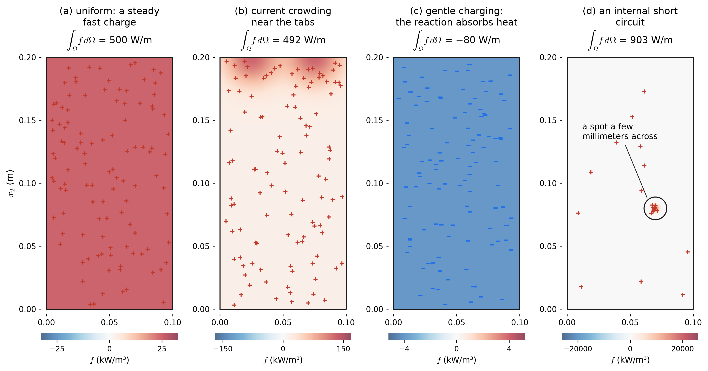
- Uniform generation — current through the electrodes and electrolyte during a steady fast charge heats the whole cell nearly evenly. This is the \(f\) of the worked example.
- Current crowding — all the current funnels through the thin current-collector foils toward the tabs, so resistive heating is concentrated near them.
- Gentle charging — the electrochemical reaction itself can absorb heat (the “reversible” or entropic heat). At a low charging current this can outweigh the resistive heating, and \(f < 0\): the cell is a heat sink.
- An internal short circuit — a defect lets current flow straight through a spot a few millimeters across. That spot alone makes as much heat as the whole cell normally does, and the temperature there spikes. This is how thermal runaway starts.
- \(f = 0\) is a cell at rest.
F.10 Boundary conditions
As in 1D, every point of the boundary gets exactly one condition: either its temperature is known, or the heat flux through it is known. Three things are new in 2D. The boundary is a curve, the data can vary along it, and the flux condition speaks to only one direction.
F.10.1 Dirichlet: \(u = g\) on \(\Gamma_g\) — the temperature is known
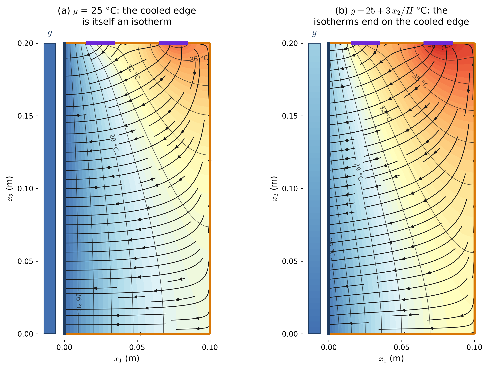
- \(g\) is a temperature, in °C — but in 2D it is a function on \(\Gamma_g\), \(g : \Gamma_g \to \RR\), with one value for each point of the cooled edge. In 1D it was a single number at a single point.
- The condition fixes the value of \(u\) along the edge: the temperature landscape is nailed to the curve \(g\) there. It says nothing about the heat flowing through the edge. How much heat the plate removes, and where, is an output of the problem — like a reaction force in statics.
- When \(g\) is constant, the edge is an isotherm, so \(\nabla u\) is perpendicular to it and heat flows straight into the plate. When \(g\) varies, the isotherms end on the edge.
- It is an essential boundary condition, imposed directly on \(u\). In the weak form it is built into the trial space \(\mathcal{S}\) rather than appearing in any integral.
- Strictly, a thin layer of thermal interface material sits between cell and plate, and the heat through it is proportional to the temperature drop across it — a Robin condition. Letting that layer’s resistance go to zero gives the Dirichlet condition.
F.10.2 Neumann: \((\kappa\nabla u)\cdot\underline{n} = h\) on \(\Gamma_h\) — the heat flux is known
As in 1D, the Neumann condition is Fourier’s law evaluated on the boundary. The flux leaving through the boundary is \(\underline{q}\cdot\underline{n}\), since \(\underline{n}\) points outward, so the flux entering is \(-\underline{q}\cdot\underline{n}\). The Neumann condition fixes the flux entering:
\[ \begin{aligned} h \;&=\; -\underline{q}\cdot\underline{n} \;=\; -\left(-\kappa\nabla u\right)\cdot\underline{n} \;=\; \left(\kappa\nabla u\right)\cdot\underline{n} \\ \Longleftrightarrow\qquad h \;&=\; -q_i\,n_i \;=\; \kappa\,u_{,i}\,n_i \end{aligned} \]
With a conductivity tensor it reads \(h = \kappa_{ij}u_{,j}n_i\). The dot product \(\nabla u\cdot\underline{n} = u_{,i}n_i\) is the slope of \(u\) in the outward direction, the normal derivative \(\partial u/\partial n\), so the condition says \(\kappa\,\partial u/\partial n = h\): the temperature’s outward slope is \(h/\kappa\). On each edge of the rectangle the normal picks out one component of the gradient:
\[ \begin{aligned} &\text{left } (x_1 = 0)\colon && \underline{n} = (-1, 0) && \Longrightarrow\quad -\kappa\,u_{,1} = h \\ &\text{right } (x_1 = W)\colon && \underline{n} = (1, 0) && \Longrightarrow\quad +\kappa\,u_{,1} = h \\ &\text{bottom } (x_2 = 0)\colon && \underline{n} = (0, -1) && \Longrightarrow\quad -\kappa\,u_{,2} = h \\ &\text{top } (x_2 = H)\colon && \underline{n} = (0, 1) && \Longrightarrow\quad +\kappa\,u_{,2} = h \end{aligned} \]
The left and right lines are the wall’s two conditions, \(-\kappa u_{,x}(0) = h\) and \(+\kappa u_{,x}(L) = h\), word for word.
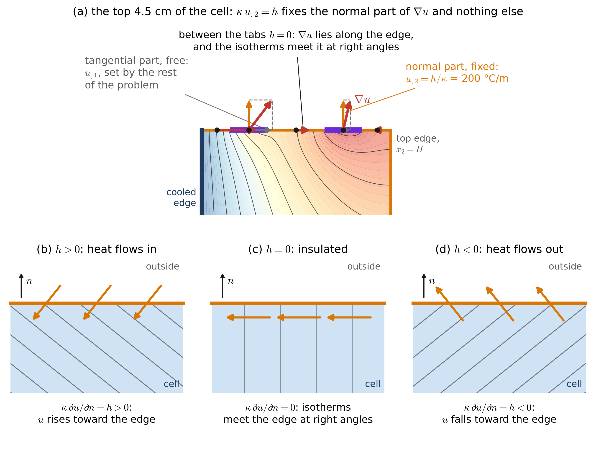
- \(h\) is a heat flux in W/m², positive when heat flows in, on any edge, whichever way the edge faces — just as for the wall.
- Only the normal part of \(\nabla u\) is fixed. The tangential part, the slope along the boundary, is left for the rest of the problem to decide. In 1D there is no “along the boundary”, so the Neumann condition fixed the whole derivative. In 2D it fixes one component of two.
- \(h = 0\) is an insulated (adiabatic) boundary. \(\nabla u\) lies along the edge, so the isotherms meet it at right angles and heat slides along it without crossing. A plane of symmetry carries the same condition, and that is exactly why the large faces between identical cells could be dropped from the problem.
- The size of the normal slope is \(|h|/\kappa\). Under the tabs, \(u_{,2} = 5000/25 = 200\) °C/m, which is 0.2 °C per millimeter, rising toward the tab.
- It is a natural boundary condition. In the weak form it appears on its own, as the boundary integral \(\int_{\Gamma_h} w\,h\;d\Gamma\).
- A surface cooled by air obeys \(h = h_c\,(u_\infty - u)\), which mixes the value and the slope. That is a Robin condition, and it is not part of Hughes’ model problem.
In numbers: at the middle of the near tab, \(\nabla u = (153,\ 200)\) °C/m; at the middle of the far tab, \((45,\ 200)\) °C/m; halfway between them, \((94,\ 0)\) °C/m. The second component is set by \(h\) in every case. The first is not: it is large near the cooling plate and small far from it, and no boundary condition on the top edge could have predicted it.
F.10.3 \(\Gamma_g\) and \(\Gamma_h\) partition the boundary
The two parts of the boundary must satisfy
\[ \Gamma = \overline{\Gamma_g \cup \Gamma_h} \qquad\qquad \Gamma_g \cap \Gamma_h = \emptyset \]
Together \(\Gamma_g\) and \(\Gamma_h\) cover the whole boundary, and they do not overlap, so each point of \(\Gamma\) belongs to exactly one of them: they partition \(\Gamma\). The bar (the closure) only restores the handful of points where the two parts meet, such as the two corners of the cooled edge, and those have no length. The two requirements guard against two different failures, shown in Figure F.10.
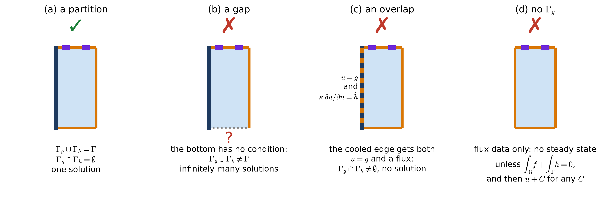
- Covering, \(\overline{\Gamma_g \cup \Gamma_h} = \Gamma\): no gaps. On a stretch of boundary with no condition, the problem does not say what happens there: it could be insulated, or pressed against a hot plate. Infinitely many temperature fields then satisfy everything else. Remember that “insulated” is a condition, \(h = 0\), and not a missing one.
- Disjoint, \(\Gamma_g \cap \Gamma_h = \emptyset\): no overlaps. Prescribing both the temperature and the flux on the same stretch asks too much. For arbitrary data no solution exists, and for the rare data that allow one, the solution is wildly sensitive to them.
- \(\Gamma_g\) must not be empty. With only flux data, (i) \(u\) is determined at best up to an added constant, because flux data only ever see \(\nabla u\). And (ii) a steady solution exists only if the heat going in balances, which follows from the divergence theorem applied to all of \(\Omega\):
\[ \int_\Omega f\;d\Omega + \int_\Gamma h\;d\Gamma = 0 \]
- For the cell, \(500 + 200 \ne 0\). Without the cooling plate there is no steady state: the cell heats up forever. This is the 2D version of the wall’s two-Neumann-faces case.
- In 2D, \(\Gamma_g\) also needs length. Holding a single point at a fixed temperature is not enough, because a point has no length for heat to leave through. A point that absorbed a finite heat flow \(Q\) (W per meter of depth) would sit at the bottom of a logarithmic well, \(u \approx \frac{Q}{2\pi\kappa}\ln r\), which is infinitely deep.
- The partition is point by point, not edge by edge. \(\Gamma_g\) could be the middle half of one edge, with \(\Gamma_h\) everywhere else. And different stretches of \(\Gamma_h\) may carry different \(h\): the tabs and the insulated edges are all part of \(\Gamma_h\).
F.10.4 Which edges get which condition
The model problem does not care which part of the boundary is \(\Gamma_g\), but the solution does. Here is the same cell, with the same \(f\) and the same tabs, under four partitions:
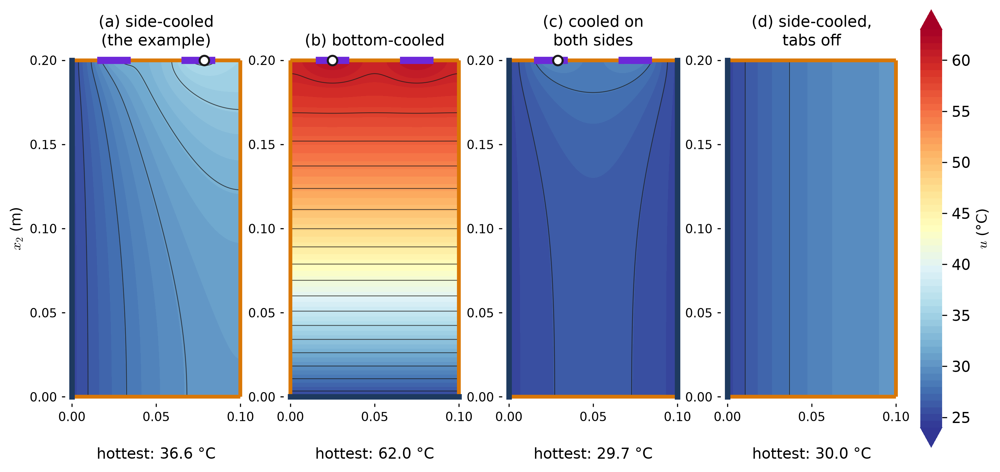
- (a) Side-cooled, the worked example: 36.6 °C at the hottest point, on the top edge under the far tab.
- (b) Bottom-cooled. Same cell, same heat, but now it has to travel the 200 mm height instead of the 100 mm width, and the tabs are as far from the plate as they can be. The hottest point reaches 62.0 °C. The bulk temperature rise grows with the square of the conduction length, so doubling the length quadruples it. Where the cooling plate goes matters as much as how cold it is.
- (c) Cooled on both sides. Each plate takes 350 W/m and the hottest point drops to 29.7 °C.
- (d) Side-cooled with the tabs off. Nothing in the data depends on \(x_2\) any more, so neither does the solution. The isotherms are vertical, and the problem is the wall (next section). Hottest point: 30.0 °C, along the whole insulated side.
F.11 How the 1D wall sits inside the 2D cell
Switch the tabs off, so that \(h = 0\) on all of \(\Gamma_h\). Now nothing in the problem — \(f\), \(g\), \(h\), or the shape of \(\Omega\) — changes with \(x_2\), so neither can \(u\): \(u = u(x_1)\) and \(u_{,2} = 0\) everywhere. Each line of the 2D strong form then collapses to a line of the 1D one:
| 2D, cell | with \(u_{,2} = 0\) | 1D, wall |
|---|---|---|
| \(-\kappa\left(u_{,11} + u_{,22}\right) = f\) in \(\Omega\) | \(-\kappa\,u_{,11} = f\) | the differential equation |
| \(u(0, x_2) = g\) | \(u(0) = g\) | Dirichlet face at \(x = 0\) |
| \(+\kappa\,u_{,1}(W, x_2) = 0\) | \(+\kappa\,u_{,1}(W) = 0\) | Neumann face at \(x = L\), \(n = +1\), \(h = 0\) |
| \(\mp\kappa\,u_{,2} = 0\) on the bottom and top | \(0 = 0\) | nothing: satisfied automatically |
This is arrangement (b) of the wall — temperature given at \(x = 0\), flux at \(x = L\) — with \(L = W\) and \(h = 0\), and its solution is the wall’s:
\[ \begin{aligned} u(x_1) &= g + \frac{f}{\kappa}\left(W x_1 - \frac{x_1^2}{2}\right) \\ u_{\max} = u(W) &= g + \frac{f\,W^2}{2\kappa} = 25 + \frac{25{,}000 \times 0.01}{2 \times 25} = 30\ {}^\circ\text{C} \end{aligned} \]
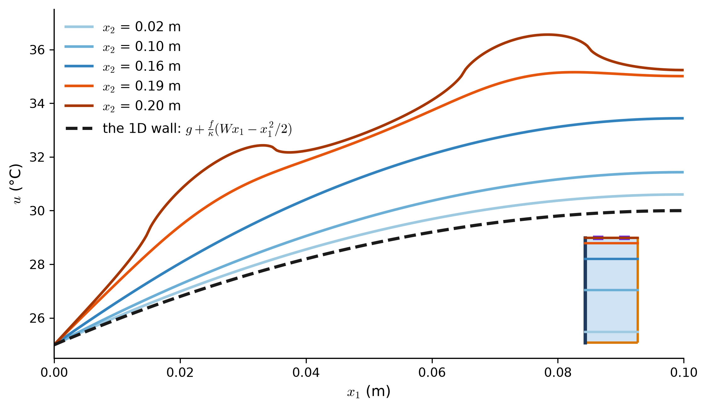
With the tabs on, the 1D solution is still the right answer far from them. At \(x_2 = 0.02\) m the 2D profile is the 1D parabola lifted by 0.6 °C, the share of the tab heat that reaches that far down. Near the top, the tabs dominate. This is the general pattern: a 1D model is accurate where the data do not vary in the other direction, and fails near the features that make them vary. The wall on the first page was exactly such a model: one strip, far from the wall’s edges.
F.12 The strong form, complete
Collecting the pieces, in both notations:
\[ (\mathrm{S}) \quad \begin{aligned} &\text{Given } f : \Omega \to \RR \;[\text{W/m}^3],\;\; \kappa > 0 \;[\text{W/(m·K)}], \\ &g : \Gamma_g \to \RR \;[{}^\circ\text{C}], \text{ and } h : \Gamma_h \to \RR \;[\text{W/m}^2], \\ &\text{where } \Gamma = \overline{\Gamma_g \cup \Gamma_h} \text{ and } \Gamma_g \cap \Gamma_h = \emptyset, \\ &\text{find } u : \bar\Omega \to \RR \;[{}^\circ\text{C}] \text{ such that} \\[4pt] &\quad -\nabla\cdot\left(\kappa\nabla u\right) = f \;\;\Longleftrightarrow\;\; -\left(\kappa\,u_{,i}\right)_{,i} = f && \text{in } \Omega \\ &\quad u = g && \text{on } \Gamma_g \\ &\quad \left(\kappa\nabla u\right)\cdot\underline{n} = h \;\;\Longleftrightarrow\;\; \kappa\,u_{,i}\,n_i = h && \text{on } \Gamma_h \end{aligned} \]
The three lines are the energy balance with Fourier’s law substituted in, the known temperatures, and the known inflows.
For the cell, with \(\Omega = \,]0, W[\, \times \,]0, H[\), written out piece by piece:
| Where | Condition | |
|---|---|---|
| in \(\Omega\) | \(-\kappa\left(u_{,11} + u_{,22}\right) = f\) | the differential equation |
| \(x_1 = 0\) | \(u(0, x_2) = g\) | the cooling plate (\(\Gamma_g\)) |
| \(x_1 = W\) | \(+\kappa\,u_{,1}(W, x_2) = 0\) | the insulated side |
| \(x_2 = 0\) | \(-\kappa\,u_{,2}(x_1, 0) = 0\) | the insulated bottom |
| \(x_2 = H\) | \(+\kappa\,u_{,2}(x_1, H) = h(x_1)\) | 5000 W/m² on the tabs, 0 between and beside them |
- It is called the strong form because the differential equation must hold at every point of \(\Omega\), which demands that \(u\) have two derivatives everywhere. Our data already strain this. At the four ends of the tabs, \(h\) jumps from 0 to 5000 W/m², and there \(\nabla u\) is unbounded: it grows like \(\ln r\) as you approach the end of a tab. The growth is mild, but it has no limit. (Look for the kinks in the top curve of Figure F.12.) The weak form, which only integrates, does not mind.
- Every figure on this page is a picture of one line of the strong form.
NoteThe exact solution, for the curious
Split the solution into a piece that carries \(f\) and a piece that carries the tab flux:
\[ \begin{aligned} u(x_1, x_2) &= g + \frac{f}{\kappa}\left(W x_1 - \frac{x_1^2}{2}\right) \\ &\quad + \sum_{m=1}^{\infty} \frac{h_m}{\kappa}\, \frac{\sin(\mu_m x_1)\,\cosh(\mu_m x_2)}{\mu_m \sinh(\mu_m H)} \end{aligned} \]
\[ \mu_m = \frac{(m - \frac12)\pi}{W}, \qquad h_m = \frac{2}{W}\int_0^W h(x_1)\sin(\mu_m x_1)\,dx_1 \]
The first two terms are the wall’s solution: they satisfy the differential equation, the Dirichlet condition, and \(h = 0\) on the other three edges. Each term of the sum satisfies \(\Delta u = 0\) (the \(\sin\) curves one way and the \(\cosh\) the other, by equal amounts), vanishes on \(x_1 = 0\), has zero slope on \(x_1 = W\) and \(x_2 = 0\), and together they add up to \(\kappa u_{,2} = h(x_1)\) on the top edge. This is separation of variables. Most of the figures and numbers on this page come from this formula, summed to hundreds of terms. The bottom-cooled and two-sided cells of Figure F.11, and the explorer below, are computed numerically instead, because most problems have no such formula. That is the reason for the finite element method.
F.13 Worked example
The cell of Figure F.1 during a fast charge: \(W\) = 0.10 m, \(H\) = 0.20 m, \(\kappa\) = 25 W/(m·K), \(f\) = 25,000 W/m³, and \(g\) = 25 °C on the cooled side. On the two tabs, \(x_1 \in [0.015, 0.035]\) m and \([0.065, 0.085]\) m, \(h\) = 5000 W/m², and \(h = 0\) on the rest of \(\Gamma_h\).
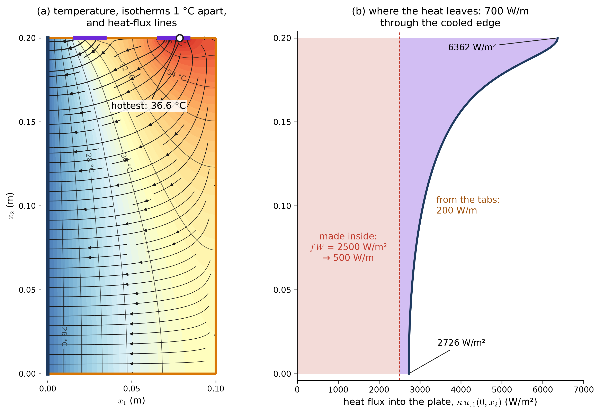
Every line of the strong form can be checked on the solution:
- The differential equation. At every point, \(u_{,11} + u_{,22} = -f/\kappa = -1000\) °C/m² (the table in the Laplacian section), even where the two curvatures individually swing between −6600 and +5600 °C/m². Equivalently, \(\nabla\cdot\underline{q} = f\): each small piece of the slice exports exactly the 25,000 W/m³ it makes.
- The Dirichlet condition. \(u(0, x_2)\) lies between 25.00 and 25.00 °C all along the cooled edge — that is, \(u = g\). Since \(f > 0\), the coldest points of the cell must lie on the boundary, and here they are exactly this edge.
- The Neumann conditions. At the middle of the far tab, \(\kappa\,u_{,2}(0.075, H) = 5000\) W/m² \(= h\). Halfway between the tabs, \(\kappa\,u_{,2}(0.05, H) = 0\) W/m². On the insulated side and bottom, \(|u_{,1}(W, x_2)|\) and \(|u_{,2}(x_1, 0)|\) never exceed \(10^{-12}\) °C/m, so the isotherms meet those edges at right angles.
- The energy balance (per meter of depth). The cell makes 500 W/m and takes in 200 W/m through the tabs, and 700.0 W/m leaves through the cooling plate. For one 27 mm cell that is 18.9 W delivered to the coolant. The plate’s share is not uniform: 2726 W/m² at the bottom of the cooled edge, rising to 6362 W/m² at the top, where the tab heat arrives.
- The hot spot. 36.6 °C, on the top edge under the far tab, at \(x_1 \approx 0.079\) m. That is 6.6 °C hotter than the same cell with the tabs off: the tabs, which bring in 29% of the heat, cause more than half of the worst-case temperature rise.
F.14 Explore the strong form
Choose which edges touch a cooling plate. Those edges are \(\Gamma_g\), and every other edge is \(\Gamma_h\). Then set the data. The map shows the temperature, computed in your browser on a 2.5 mm grid, with isotherms and heat-flux arrows. Blue edges are \(\Gamma_g\), amber edges are \(\Gamma_h\), and the violet stretches are the tabs; the white dot is the hottest point. The checkboxes cannot create a gap or an overlap, because every edge is either checked or not — but they can leave \(\Gamma_g\) empty.
- Uncheck every edge: \(\Gamma_g = \emptyset\), and the heat has nowhere to go.
- Set the tab flux to 0 with only the left edge cooled: the isotherms become vertical lines, and the cell is the wall.
- Cool the bottom instead of the side, and watch the hottest point.
- Cool the top edge: the tabs disappear, because a point cannot be in \(\Gamma_g\) and \(\Gamma_h\) at once.
- Give the coolant a rise in \(g\), and watch the isotherms detach from the cooled edge.
- Make \(f\) negative with the tabs off: the cell now absorbs heat, so the “cooling” plate supplies it. The flux arrows reverse, and the coldest point is on the far side.
- Halve \(\kappa\): every temperature rise above \(g\) doubles. The same heat needs twice the gradient.